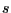

Next: Dependency function labeling rules Up: Dependency Parsing Rule File Previous: Dependency Parsing Rule File Contents
Section <GRPAR> contains rules to complete the
partial parsing provided by the chart parser. The tree is
completed by combining chunk pairs as stated by the rules. Rules
are applied from highest priority (lower values) to lowest
priority (higher values), and left-to right.
That is, the pair of adjacent chunks matching the most prioritary
rule is found, and the rule is applied, joining both chunks in
one. The process is repeated until only one chunk is left.
The rules can be enabled/disabled via the activation of global flags. Each rule may be stated to be enabled only if certain flags are on. If none of its enabling flags are on, the rule is not applied. Each rule may also state which flags have to be toggled on/off after its application, thus enabling/disabling other rule subsets.
Each line contains a rule, with the format:
priority flags context (ancestor,descendant) operation op-params flag-opswhere:
priority is a number stating the priority of a rule
(the lower the number, the higher the priority).
flags is a list of strings separated by vertical bars
(``|''). Each string is the name of a flag that will
cause the rule to be enabled. If enabling_flags equals
``-'', the rule will be always enabled.
context is a context limiting the application of the
rule only to chunk pairs that are surrounded by the appropriate
context (``-'' means no limitations, and the rule is applied to
any matching chunk pair) (see below).
(ancestor,descendant) are the labels of the adjacent pair of
chunks the rule will be applied to. The labels are either assigned by
the chunk parser, or by a RELABEL operation on some other completion rule.
The pair must be enclosed in parenthesis, separated by a comma, and
contain NO whitespaces.
The chunk labels may be suffixed with one extra condition of the form:
(form), <lemma>, [class], or {PoS_regex}.
For instance,
| The label: | Would match: |
np |
any chunk labeled np by the chunker |
np(cats) |
any chunk labeled np by the chunker |
with a head word with form cats |
|
np<cat> |
any chunk labeled np by the chunker |
with a head word with lemma cat |
|
np[animal] |
any chunk labeled np by the chunker |
with a head word with a lemma in animal |
|
category (see CLASS section below) |
|
np{^N.M} |
any chunk labeled np by the chunker |
| with a head word with a PoS tag matching | |
the ^N.M regular expression |
operation is the way in which ancestor
and descendant nodes are to be combined (see below).
op-params component has two meanings, depending
on the operation field: top_left and
top_right operations must be followed by the literal
RELABEL plus the new label(s) to assign to the chunks.
Other operations must be followed by the literal MATCHING
plus the label to be matched.
For top_left and top_right operations the labels
following the keyword RELABEL state the labels with which
each chunk in the pair will be relabelled, in the format
label1:label2. If specified, label1 will be the
new label for the left chunk, and label2 the one for the
right chunk. A dash ( ``-'') means no relabelling. In none of
both chunks is to be relabelled, ``-'' may be used instead of
``-:-''.
For example, the rule:
20 - - (np,pp<of>) top_left RELABEL np-of:- - will hang the pp chunk as a daughter of the left chunk
in the pair (i.e. np), then
relabel the np to np-of, and leave the label for
the pp unchanged.
For last_left, last_right and
cover_last_left operations, the label following the keyword
MATCHING states the label that a node must have in
order to be considered a valid ``last'' and get the subtree as
a new child. This label may carry the same modifying suffixes
than the chunk labels. If no node with this label is found in
the tree, the rule is not applied.
For example, the rule:
20 - - (vp,pp<of>) last_left MATCHING np -
will hang the pp chunk as a daughter of the last subtree
labeled np found inside the vp chunk.
flag-ops is a space-separated list of
flags to be toggled on/off. The list may be empty (meaning that
the rule doesn't change the status of any flag). If a flag name
is preceded by a ``+'', it will be toggled on. If the leading
symbol is a ``-'', it will be toggled off.
For instance, the rule:
20 - - (np,pp<of>) top_left RELABEL - -
states that if two subtrees labelled np and pp are
found contiguous in the partial tree, and the second head word has
lemma of, then the later (rightmost) is added as a new child
of the former (leftmost), whatever the context is, without need of
any special flag active, and performing no relabelling of the new
tree root.
The supported tree-building operations are the following:
top_left: The right subtree is added as a daughter of
the left subtree. The root of the new tree is the root of the
left subtree. If a label value other than ``-'' is
specified, the root is relabelled with that string.
last_left: The right subtree is added as a daughter of
the last node inside the left subtree matching label value
(or to the root if none is found). The root of the new tree is
the root of the left subtree.
top_right: The left subtree is added as a new daughter
of the right subtree. The root of the new tree is the root of the
right subtree. If a label value other than ``-'' is
specified, the root is relabelled with that string.
last_right: The left subtree is added as a daughter of
the last node inside the right subtree matching label
value (or to the root if none is found). The root of the new tree
is the root of the right subtree.
cover_last_left: The left subtree () takes the
position of the last node (label value. The node
The context may be specified as a sequence of chunk labels,
separated by underscores ``_''.
One of the chunk labels must be $$, and refers to the pair of chunks
which the rule is being applied to.
For instance, the rule:
20 - $$_vp (np,pp<of>) top_left RELABEL -
would add the rightmost chunk in the pair (pp<of>) under the
leftmost (np) only if the chunk immediate to the right of the pair
is labeled vp.
Other admitted labels in the context are: ? (matching exactly
one chunk, with any label), * (matching zero or more chunks
with any label), and OUT (matching a sentence boundary).
For instance the context np_$$_*_vp_?_OUT would match a
sentence in which the focus pair of chunks is immediately after an
np, and the second-to-last chunk is labeled vp.
Context conditions can be globally negated preceding them with an exclamation
mark (!). E.g. !np_$$_*_vp would cause the rule to be applied only
if that particular context is not satisfied.
Context condition components may also be individually negated
preceding them with the symbol ~. E.g. the rule
np_$$_~vp would be satisfied if the preceding chunk is
labeled np and the following chunk has any label but
vp.
Enabling flags may be defined and used at the grammarian's will. For instance, the rule:
20 INIT|PH1 $$_vp (np,pp<of>) last_left MATCHING npms[animal] +PH2 -INIT -PH1
Will be applied if either INIT or PH1 flags are
on, the chunk pair is a np followed by a pp with head
lemma of, and the context (one vp chunk following the
pair) is met. Then, the deepest rightmost node matching the label
npms[animal] will be sought in the left chunk, and the right
chunk will be linked as one of its children. If no such node is found,
the rule will not be applied.
After applying the rule, the flag PH2 will be toggled
on, and the flags INIT and PH1 will be toggled
off.
The only predefined flag is INIT, which is toggled on when
the parsing starts. The grammarian can define any alphanumerical
string as a flag, simply toggling it on in some rule.
Lluís Padró 2010-09-02